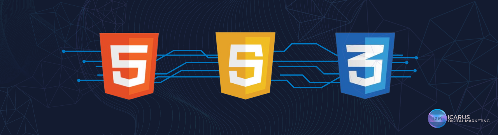

The Evolution of Frontend Development
The landscape of web development has evolved dramatically over the past decade. Frontend development,
in particular, has seen some of the most exciting advancements, thanks to core technologies like HTML,
CSS, and JavaScript. As websites have transitioned from simple, static pages to interactive, dynamic
experiences, the tools and techniques for crafting modern websites have kept pace. At Icarus Digital
Marketing (IDM), we pride ourselves on staying ahead of the curve by leveraging these cutting-edge
technologies to design exceptional websites for our clients.
A Decade of Progress in Frontend Development
The frontend development world has come a long way. Ten years ago, websites were often built using
static HTML and CSS, with limited interactivity. Developers had to handcraft every aspect of the user
interface. JavaScript was used primarily for minor enhancements, such as form validation or basic animations.

However, the true revolution has come from JavaScript. Once a tool for adding small interactive features,
JavaScript has now become the backbone of modern web applications. Frameworks like React, Vue, and Angular
allow developers to build complex, single-page applications (SPAs) that function like desktop software,
providing a smoother user experience. JavaScript has become so powerful that entire platforms like Node.js
have been built on it, enabling developers to use it for both frontend and backend development.
Enter CSS Frameworks: Bootstrap 5 and Beyond
As the complexity of frontend development grew, so did the need for efficient, reusable components.
This is where CSS frameworks like Bootstrap came into play. Originally launched in 2011, Bootstrap
quickly became the go-to solution for responsive web design. The framework provided pre-built
components—like buttons, grids, and forms—that helped developers create sleek, professional websites
in a fraction of the time.
Fast forward to Bootstrap 5, and the framework is more powerful and flexible than ever. Bootstrap 5
eliminated jQuery as a dependency, leaning into the power of vanilla JavaScript, and improved customization
options. It supports modern CSS features like Flexbox and CSS Grid, making it easier to build responsive
layouts without relying heavily on complex, outdated methods.
With Bootstrap 5, developers can build websites
that look stunning on any device, ensuring a seamless experience for users, whether they’re on a desktop, tablet,
or mobile phone.

At IDM, we integrate Bootstrap 5 into many of our projects, leveraging its powerful grid system and reusable
components to create visually appealing, responsive designs. This allows us to deliver websites that not only
meet but exceed client expectations, providing fast, smooth, and engaging user experiences.
JavaScript Libraries and Frameworks: Elevating Interactivity
JavaScript's evolution over the last decade has also revolutionized how websites behave and interact with users.
Today, it's no longer about simple click-to-respond actions. Modern JavaScript libraries and frameworks, such as
React, Vue.js, and Angular, enable developers to build full-fledged web applications with real-time updates,
enhanced user interfaces, and seamless state management.
At IDM, we harness the power of JavaScript to build highly interactive websites. Whether it’s using React’s
component-based architecture for fast, dynamic UIs or incorporating Vue.js for lightweight and flexible
development, our team excels at crafting intuitive, user-friendly interfaces. We ensure that every interaction,
animation, or transition runs smoothly and adds value to the overall user experience.
“ Most good programmers do programming not because they expect to get paid or get adulation by the public, but because it is fun to program. The joy of building something, of making it work, is a powerful drive. For many, it’s this passion that keeps them going, even when the challenges seem impossible.
- Linus Torvalds, creator of Linux and Git “
Frontend Development at IDM: Where Innovation Meets Design
At Icarus Digital Marketing, we understand that a website is more than just a digital presence—it's an extension
of your brand. That's why our team of experienced frontend developers and designers combines the best practices
of HTML, CSS, and JavaScript to create websites that are not only functional but also visually striking. We make
use of modern libraries and frameworks like Bootstrap 5, React, and CSS3 to ensure that our clients’ websites are
responsive, interactive, and future-proof.

Our expertise in frontend development allows us to:
Create Stunning, Responsive Designs
With the latest CSS frameworks and responsive design principles, we ensure your website looks flawless on any device, from desktops to mobile phones.
Build Interactive User Experiences
By leveraging JavaScript frameworks, we deliver web applications that are fast, intuitive, and engaging for users.
Utilize the Latest Technologies
Whether it's Bootstrap 5 or a cutting-edge JavaScript framework, we stay on top of the latest trends to give our
clients a competitive edge in the digital space.
The Future of Frontend Development
Looking ahead, the future of frontend development looks even brighter. With the continuous development of WebAssembly, Progressive Web Apps (PWAs), and new JavaScript APIs, developers will be able to create even more powerful and feature-rich websites. At IDM, we are always looking forward, ensuring that we keep our clients at the forefront of digital innovation.
Frontend development has come a long way in the last decade, thanks to advancements in HTML, CSS,
and JavaScript. At Icarus Digital Marketing, we’ve embraced these changes, using the latest tools like Bootstrap 5
and modern JavaScript frameworks to create websites that are fast, responsive, and beautiful. As we look to the future,
we’re excited to continue pushing the boundaries of what’s possible in web design and development.